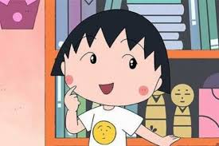

KARTUN ANIMASI ANAK
CIBI MARUKO CHAN
TOKOH
CIBI MARUKO CHAN

Chibi Maruko-chan (ちびまる子ちゃん) adalah serial anime yang diangkat dari manga populer yang dikarang Momoko Sakura,
dan juga nama panggilan untuk tokoh utama berupa anak perempuan berusia 9 tahun kelas 3 sekolah dasar.
Kisahnya bertemakan komedi kehidupan sehari-hari anak SD berdasarkan pengalaman masa kecil pengarangnya.
Chibi Maruko-chan juga dijadikan serial drama dengan pemeran cilik Ei Morisako (generasi pertama) dan Ayaka Itoh (generasi kedua).
Di Indonesia, serial anime ini pernah ditayangkan di RCTI, RTV dan Spacetoon.[1]
kembali ke atas
TOKOH
MARUKO CHAN

Momoko "Maruko" Sakura (さくらももこ, Sakura Momoko)
Tokoh utama pada komik dan anime Chibi Maruko-chan, nama aslinya adalah Momoko Sakura, seperti nama pengarangnya.
Ia adalah anak kelas 3 sekolah dasar yang dibesarkan oleh keluarga dengan ekonomi menengah ke bawah.
Dia adalah seorang anak yang pemalas, suka membuat berantakan, sering mendapat nilai buruk,
dan sering terlambat ke sekolah sehingga sering menyusahkan ibunya terutama untuk membangunkannya.
Sifatnya bertentangan dengan kakak perempuannya yang rajin, pandai serta berpendirian tenang.
Seperti kebanyakan anak seusianya, ia tidak senang bila diberi pekerjaan rumah dan sering memilih-milih makanan.
kembali ke atas
HIROSHI SAKURA
Hiroshi Sakura (さくらひろし, Sakura Hiroshi)
Ayah Maruko, orang yang egois dan berbicara dengan kata-kata yang pedas sesuka hatinya,
pernah terjadi cekcok dengan Maruko karena masalah Natto. Ceritanya, ayahnya mengecap
Maruko yang tidak suka adalah memalukan Jepang saja, anggota keluarga lain menganggap
perkataan ayah terlalu kelewatan. Selain itu masih banyak hal-hal yang menyebabkan
Maruko atau anggota keluarga lainmya terlibat cekcok dengannya. Hobinya adalah memancing,
menjadi pengawas kuda, dan minum minuman keras. Ia pernah memenangkan undian sebuah mobil
dan mengajak anggota keluarganya jalan-jalan,karena sering hampir menabrak membuat yang lainnya
merasa resah kalau ayah yang menyetir.
kembali ke atas
SUMIRE SAKURA
Sumire Sakura (さくらすみれ, Sakura Sumire)
Ibu Maruko, ia sering memarahi Maruko karena kenakalannya. Ia adalah seorang ibu yang disiplin tetapi tolerir.
Dia sangat fokus terhadap pengeluaran keluarga dan berusaha mendapatkan barang kebutuhan dengan harga serendah mungkin.
Ibunya sering mengacau Kahyangan Maruko dan Toshiko. Nama gadisnya adalah Kobayashi Sumire.
kembali ke atas
SAKIKO SAKURA

Sakiko Sakura (さくらさきこ, Sakura Sakiko)
Adalah kakak perempuan dari Maruko, berbeda dengan Maruko yang pemalas, dan sering mendapat nilai buruk.
Ia adalah orang yang rajin, tenang, dan pandai. Ia sering mendapat perhatian dari ibunya yang membuat Maruko menjadi
iri. Ia adalah anak kelas 6 sekolah dasar di sekolah yang sama dengan Maruko.
Ia pernah bermimpi bahwa ia dipenggal kepala Sakiko oleh pemerintah.
kembali ke atas
TOMOZOU
Tomozou Sakura (さくら友蔵, Sakura Tomozō)
Kakek Maruko, Maruko adalah cucu kesayangannya dari Maha Guru Shintaro Honami.
Ia sering sekali terlihat bersama Maruko saat menonton TV atau jalan-jalan.
Ia memiliki sifat yang cenderung dramatis ketika menanggapi sesuatu, dan mudah termakan tanggapan orang lain.
kembali ke atas
TEMAN MARUKO
TAMAE HONAMI
Tamae Honami (穂波 たまえ, Honami Tamae)
Sahabat Maruko. Dia cerdas dan ikut campur dengan kegiatan yang Maruko jalani. Dia dipanggil Tama-chan oleh Maruko.
Dia suka main gitar. Ia tidak suka dengan sifat ayahnya, karena ayahnya sangat "fanatik" terhadap fotografi.
Ia juga selalu pasrah dengan "tingkah aneh" Maruko, dan ia bersifat dramatis dalam hatinya jika ia menyakiti hati Maruko.
KAZUHIKO HANAWA
Kazuhiko Hanawa (花 轮 和 彦, Hanawa Kazuhiko)
Seorang anak kaya raya di kelas Maruko yang tinggal sementara di rumah pengasuhnya, Kakek Hediji.
Ibunya sering jalan-jalan keluar kota atau keluar negeri sehingga ia jarang bertemu dengan ibunya.
Dia diantar-jemput dengan limusin setiap hari.
SUEO MARUO
Sueo Maruo (丸 尾 末 男, Maruo Sueo)
Maruo adalah salah satu teman sekelas Maruko yang menjabat sebagai ketua kelas.
Ia selalu ingin dikagumi oleh orang lain. Ia memakai kacamata yang sangat tebal karena ia terlalu sering membaca buku
dan belajar. Garis hitam selalu muncul di wajahnya hampir sepanjang waktu, terutama ketika ia tampak gembira,
sehingga tampak menakutkan bagi teman-temannya. Dia sangat ketakutan kalau ada yang merebut posisinya sebagai ketua kelas
dan sering mendekati teman sekelas yang menonjol dan selalu bersikap baik dengannya agar tak menjatuhkannya.
kembali ke atas